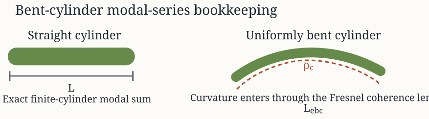

Introduction
Experimental Unvalidated
Model-family pages: Overview Implementation Theory
The bent-cylinder modal series solution (BCMS) is a
curvature-aware extension of the straight finite-cylinder modal family
developed by Stanton for finite-length cylinders near broadside.12 The
physical idea is simple: curvature modifies the way different parts of
the cylinder remain coherent with one another, but it does not replace
the local cross-sectional scattering physics with a completely different
kernel.
That separation leads to a two-level theory:
- a straight finite-cylinder modal backscatter kernel, and
- a curvature-dependent coherent-length correction applied to that kernel.
The present page follows the package-wide indexing convention: medium
1 is the surrounding seawater and medium 2 is
the cylinder interior.
Straight-cylinder starting point
Local cross-sectional modal content
BCMS inherits its local cross-sectional response from
the straight finite-cylinder modal series. For a circular cylinder of
radius a and length L, the near-broadside backscattering
amplitude can be written schematically as:
f_{\mathrm{bs}}^{(\mathrm{straight})} = \frac{L}{\pi} \frac{\sin(k_1 L \cos\theta)} {k_1 L \cos\theta} \sum_{m=0}^{\infty} (-1)^m \epsilon_m B_m.
Here k_1 = \omega/c_1 is the seawater wavenumber, \theta is the incidence angle measured relative to the cylinder axis, \epsilon_m is the Neumann factor, and B_m is the straight-cylinder modal coefficient of order m.
The details of B_m depend on the
boundary condition. For fluid-like cylinders, those coefficients are the
same ones derived in the FCMS theory
page. BCMS does not replace those coefficients. It
reuses them.
Why curvature can be isolated
For a gently and uniformly bent cylinder near broadside, the local radius and cross-sectional boundary condition still look straight at the scale of the cross-sectional modal solve. What changes is the two-way phase accumulated by different points along the curved axis.
That is the central approximation of BCMS: curvature is
treated as an axial-coherence problem, not as a new cross-sectional
boundary-value problem.
Uniformly bent geometry
Centerline and curvature
Let s \in [-L/2, L/2] denote arc length along the cylinder centerline, and let \kappa = 1/\rho_c denote the constant curvature, where \rho_c is the radius of curvature. A convenient planar representation of the bent centerline is:
\mathbf{r}_c(s) = \begin{bmatrix} \rho_c \sin(s/\rho_c) \\ 0 \\ \rho_c \left[1 - \cos(s/\rho_c)\right] \end{bmatrix}.
up to a rigid translation that does not affect the coherent integral.
The local tangent direction is then:
\hat{\mathbf{t}}(s) = \frac{d\mathbf{r}_c}{ds} = \begin{bmatrix} \cos(s/\rho_c) \\ 0 \\ \sin(s/\rho_c) \end{bmatrix}.

Broadside phase bookkeeping
For monostatic backscatter, each point on the centerline contributes a two-way phase proportional to its projection onto the backscatter direction. If \hat{\mathbf{q}} denotes the relevant unit look direction, the coherent length is:
L_{\mathrm{ebc}} = \int_{-L/2}^{L/2} \exp\left[ 2 i k_1 \hat{\mathbf{q}}\cdot \mathbf{r}_c(s) \right] ds.
When the centerline is straight, \mathbf{r}_c(s) becomes linear in s and this integral reduces to the ordinary sinc-style axial factor. For a bent centerline, the phase becomes nonlinear in s, which is why the coherence is reduced even when the local cylinder physics is unchanged.
Equivalent coherent length and Fresnel form
For a uniformly bent cylinder near broadside, Stanton’s reduction writes the bent amplitude as:
f_{\mathrm{bs}}^{(\mathrm{bent})} = \frac{L_{\mathrm{ebc}}}{L} f_{\mathrm{bs}}^{(\mathrm{straight})}.
The curvature therefore enters only through the ratio L_{\mathrm{ebc}}/L. This quantity is often called the equivalent coherent length because it says how much of the nominal straight-cylinder length remains phase coherent once the axis is bent.
For constant curvature, the phase in the axial integral is quadratic in the near-broadside reduction, so L_{\mathrm{ebc}} can be expressed through Fresnel integrals. The exact Fresnel form is useful computationally because it avoids having to re-discretize the entire axis for each frequency. More importantly, it makes the physics explicit: if curvature is weak or frequency is low, the phase varies slowly and L_{\mathrm{ebc}} \approx L; if curvature is stronger or frequency is higher, different portions of the bent axis dephase and the coherent length decreases.
Backscatter and target strength
Once the straight modal kernel and bent coherent-length factor are known, the backscattering cross-section and target strength follow the standard monostatic definitions:
\sigma_{\mathrm{bs}} = \left|f_{\mathrm{bs}}^{(\mathrm{bent})}\right|^2, \qquad \mathrm{TS} = 10\log_{10}\left(\sigma_{\mathrm{bs}}\right).
The curved cylinder therefore differs from the straight cylinder through a complex coherence multiplier, not through a new definition of target strength.
Mathematical assumptions
The family rests on a narrow but physically useful set of assumptions:
- the cross-section remains circular,
- the curvature is uniform,
- the target is treated near broadside,
- the straight-cylinder modal coefficients remain the correct local kernel,
- curvature modifies only the axial phase coherence.
These assumptions are why BCMS is best understood as a
curvature extension of FCMS, not as a completely separate
exact modal family. Its strength is that it preserves the modal physics
of the straight cylinder while still accounting for the first-order way
in which a bent axis destroys coherence.